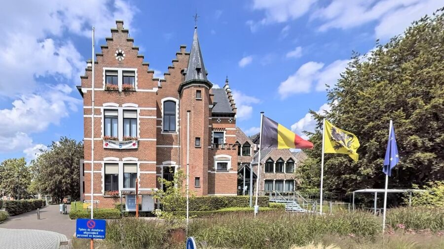

VOOR DE LEERKRACHT
Na publicatie bevat deze QR-code automatisch het adres van deze pagina. Print hem of projecteer hem in de klas.
THEMA 1 · 2DE LEERJAAR
Oefen de woorden, bekijk echte plekken en maak je klaar voor de toets.

ECHT IN ONZE GEMEENTE
In de oefeningen herken je gebouwen en plaatsen die je zelf in Bornem kunt tegenkomen.